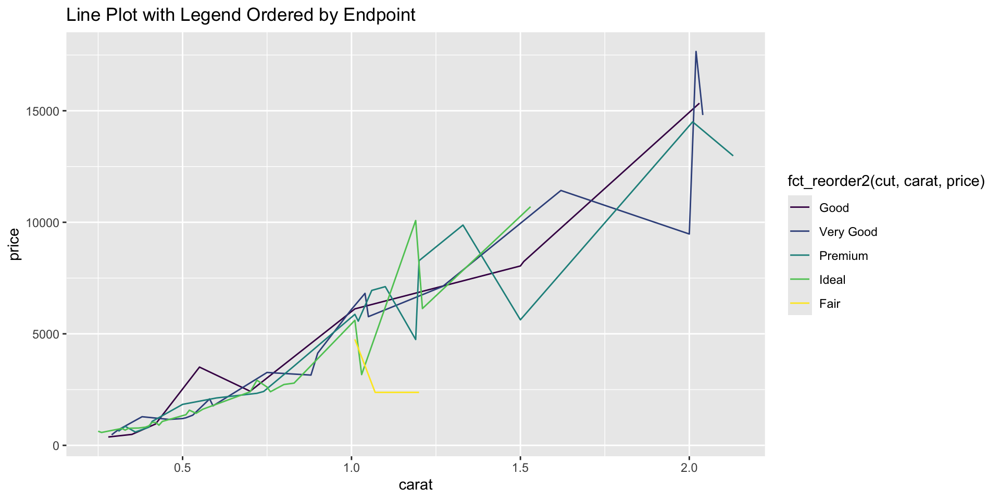

# Long stringslong_strings <-rep(c("Very or Extremely Dissatisfied", "Somewhat or a Little Dissatisfied", "Neutral and/or no response"), length.out =1000)long_factors <-factor(long_strings)object.size(long_strings) # ~8 KB
8304 bytes
object.size(long_factors) # ~5 KB - BETTER
4720 bytes
Base R factor functions
Core functions:
factor(): Create factor
levels(): View/set levels
nlevels(): Count levels
as.character(): Convert to string
as.numeric(): Get underlying integers
f <-factor(c("low", "medium", "high", "medium", "low"))levels(f) # View levels
[1] "high" "low" "medium"
nlevels(f) # Count levels
[1] 3
as.character(f) # Convert to strings
[1] "low" "medium" "high" "medium" "low"
as.numeric(f) # Get underlying integers
[1] 2 3 1 3 2
forcats package
For categorical variables
Consistent fct_* naming:
Reorder: fct_relevel, fct_reorder, fct_infreq
Modify levels: fct_recode, fct_collapse, fct_lump
Other: fct_drop, fct_rev, fct_explicit_na
Create and Inspect Factors
Create factors
factor(): Base R function
Default levels in alphabetical order
Includes arguments to specify order, labels, and more
as_factor(): From forcats
Preserves order of appearance
No additional specification needed or possible
# Using factor()f1 <-factor(c("low", "medium", "high", "medium", "low"))levels(f1) # Alphabetical order
[1] "high" "low" "medium"
as.numeric(f1) # high=1, low=2, medium=3
[1] 2 3 1 3 2
# Using as_factor() from forcatsf2 <-as_factor(c("low", "medium", "high", "medium", "low"))levels(f2) # Order of appearance
[1] "low" "medium" "high"
as.numeric(f2) # low=1, medium=2, high=3
[1] 1 2 3 2 1
Specify levels
Control level order
Define levels when creating factors: f <- factor(x, levels = c(...))
levels argument: Set specific levels and order
Overrides default (alphabetical)
Elements of levels vector must match unique values in x
Levels not in x will be created but have no observations
Observations in x without corresponding levels will become NA
View levels of an existing factor: levels(f)
Redefine levels of an existing factor: f <- levels(f)
# begin with existing factor `f` from previous example# running levels() function WITH assignment SETS levelslevels(f) <-c("A", "B", "C") # Set levels on existing factorf
[1] B C A C B
Levels: A B C
# running levels() function WITHOUT assignment RETURNS EXISTING levelslevels(f)
sizes_unordered <-factor(c("medium", "small", "large", "small", "medium"),levels =c("small", "medium", "large"),ordered =FALSE) # F is the default, no need to specifysizes_unordered
[1] medium small large small medium
Levels: small medium large
sizes_ordered <-factor(c("medium", "small", "large", "small", "medium"),levels =c("small", "medium", "large"),ordered =TRUE) # or use ordered() function without `ordered` argumentsizes_ordered
[1] medium small large small medium
Levels: small < medium < large
sizes_ordered[1] < sizes_ordered[3] # TRUE: medium < large
[1] TRUE
sizes_ordered[2] > sizes_ordered[4] # FALSE: small > small
[1] FALSE
sizes_ordered[2] == sizes_ordered[4] # TRUE: small == small
[1] TRUE
Inspect levels
Examine factor structure
Base:
levels(): View level labels
returns character vector of level names
nlevels(): Count levels
forcats:
fct_unique(): Unique values of levels
returns factor of unique levels
fct_count(): Frequency table
x <-factor(c("medium", "high", "low", "high", "high", "medium"))
levels(x) # View level labels
[1] "high" "low" "medium"
nlevels(x) # Count levels
[1] 3
fct_unique(x) # Unique values of levels
[1] high low medium
Levels: high low medium
fct_count(x) # Frequency table
# A tibble: 3 × 2
f n
<fct> <int>
1 high 3
2 low 1
3 medium 2
forcats
Aside from factor and levels, it’s forcats only from here on out!
Reorder Factor Levels
Manual reordering/releveling
fct_relevel(): Move levels to specific positions
Move to front
Move relative to another level
Move to specific position
Note: Conceptually this is reordering levels, but there is a different function called fct_reorder() (coming up) that does reorders levels with a different mechanism. In most cases when you need to manually reorder levels, you’re going to use relevel().
f <-factor(c("medium", "low", "high", "medium", "low"))f
[1] medium low high medium low
Levels: high low medium
levels(f) # Current order
[1] "high" "low" "medium"
Move specific level to front
fct_relevel(f, "low") # Move "low" to front
[1] medium low high medium low
Levels: low high medium
Move one level relative to another
fct_relevel(f, "medium", "high") # Move "medium" before "high"
[1] medium low high medium low
Levels: medium high low
Move one level to specific position
# Move "high" after first levelfct_relevel(f, "high", after =1)
[1] medium low high medium low
Levels: low high medium
# Move "medium" to first position### same as fct_relevel(f, "medium")fct_relevel(f, "medium", after =0)
[1] medium low high medium low
Levels: medium high low
# Move "low" to last positionfct_relevel(f, "low", after =Inf)
[1] medium low high medium low
Levels: high medium low
Reorder by appearance
fct_inorder(): Order by first appearance
f <-factor(c("b", "b", "a", "c", "c", "c"))f
[1] b b a c c c
Levels: a b c
Reorder by first appearance
fct_inorder(f)
[1] b b a c c c
Levels: b a c
Equivalent to creating with as_factor()
f <-as_factor(c("b", "b", "a", "c", "c", "c"))f
[1] b b a c c c
Levels: b a c
Reorder by frequency
fct_infreq(): Most common first
f <-factor(c("b", "b", "a", "c", "c", "c"))f
[1] b b a c c c
Levels: a b c
Reorder by frequency, most common first
fct_infreq(f)
[1] b b a c c c
Levels: c b a
fct_infreq() use case: bar charts
Probably the most common use case for fct_infreq() is to create bar charts with bars ordered by frequency (most common first). This is often more informative than the default alphabetical ordering.
ggplot(data.frame(f), aes(x =fct_infreq(f))) +geom_bar() +labs(title ="Bar Chart with Frequency-Ordered Factor")
Reorder by another variable
fct_reorder(f, x, fun): Order factor by summary of another variable
Default: median
Great for sorted plots
fct_reorder2(f, x, y): Order by relationship with two variables
Perfect for line plots (legend matches line order)
Create dataset with categorical and numeric variables
summary(diamonds)
carat cut color clarity depth
Min. :0.2000 Fair : 1610 D: 6775 SI1 :13065 Min. :43.00
1st Qu.:0.4000 Good : 4906 E: 9797 VS2 :12258 1st Qu.:61.00
Median :0.7000 Very Good:12082 F: 9542 SI2 : 9194 Median :61.80
Mean :0.7979 Premium :13791 G:11292 VS1 : 8171 Mean :61.75
3rd Qu.:1.0400 Ideal :21551 H: 8304 VVS2 : 5066 3rd Qu.:62.50
Max. :5.0100 I: 5422 VVS1 : 3655 Max. :79.00
J: 2808 (Other): 2531
table price x y
Min. :43.00 Min. : 326 Min. : 0.000 Min. : 0.000
1st Qu.:56.00 1st Qu.: 950 1st Qu.: 4.710 1st Qu.: 4.720
Median :57.00 Median : 2401 Median : 5.700 Median : 5.710
Mean :57.46 Mean : 3933 Mean : 5.731 Mean : 5.735
3rd Qu.:59.00 3rd Qu.: 5324 3rd Qu.: 6.540 3rd Qu.: 6.540
Max. :95.00 Max. :18823 Max. :10.740 Max. :58.900
z
Min. : 0.000
1st Qu.: 2.910
Median : 3.530
Mean : 3.539
3rd Qu.: 4.040
Max. :31.800
CODE BLOCK: Use fct_reorder() to sort by median
ggplot(diamonds, aes(x =fct_reorder(cut, carat), y = carat)) +geom_boxplot() +labs(title ="Boxplot with Categories Reordered by Median Carat Value")
CODE BLOCK: Create sorted plot with something other than median
ggplot(diamonds, aes(x =fct_reorder(cut, carat, max), y = carat)) +geom_boxplot() +labs(title ="Boxplot with Categories Reordered by Maximum Carat Value")
Use fct_reorder2() to order by relationship between two variables (e.g., for line plot)
diamonds |>slice_sample(n =100) |>ggplot(aes(x = carat, y = price, color =fct_reorder2(cut, carat, price))) +geom_line(stat ="summary", fun = mean) +labs(title ="Line Plot with Legend Ordered by Endpoint")

diamonds |>slice_sample(n =100) |>ggplot(aes(x = carat, y = price, color = cut)) +geom_line(stat ="summary", fun = mean) +labs(title ="Line Plot with Legend Ordered by Endpoint")
Reverse order
fct_rev(): Reverse current level order
Use case: Flip bar chart from top-to-bottom to bottom-to-top